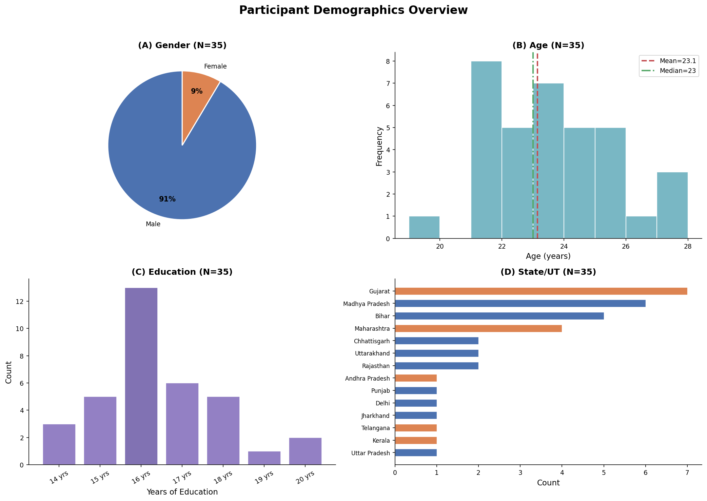
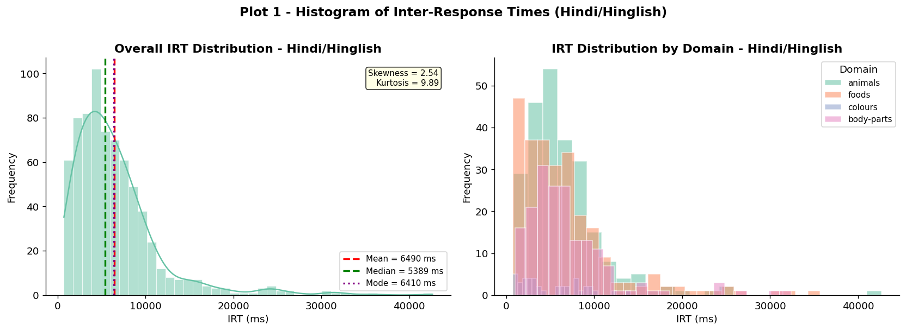
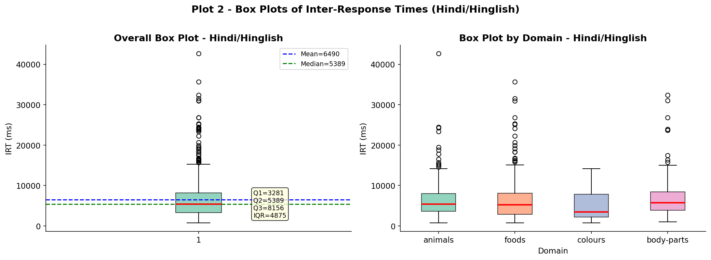
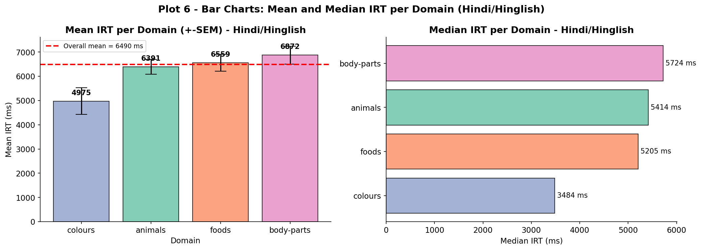
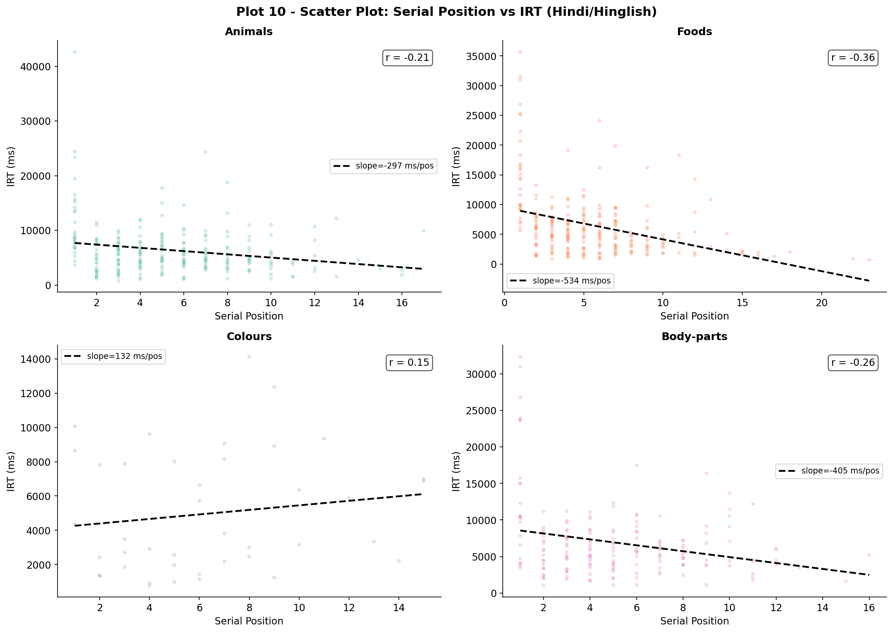
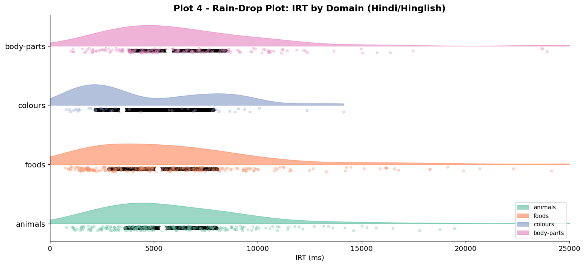
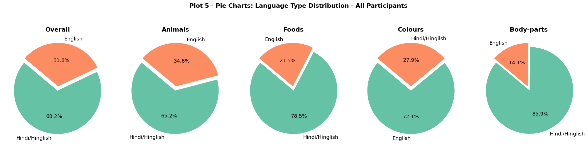
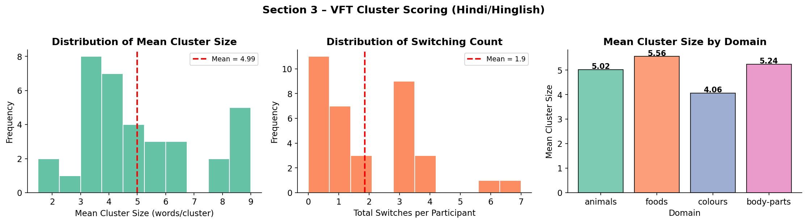
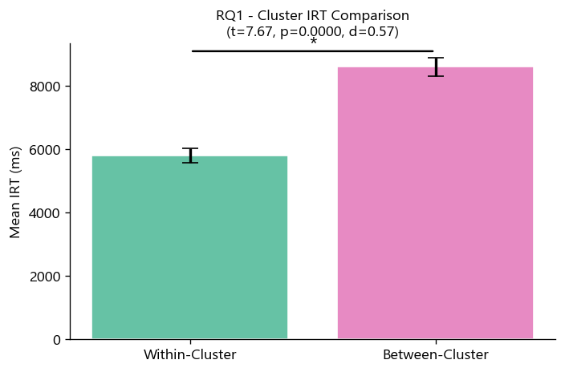
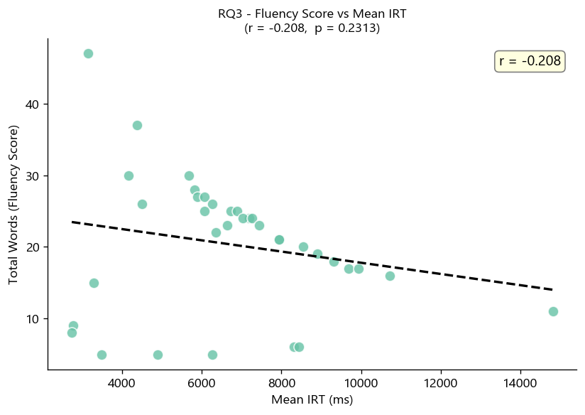

Mid-Project Report — Verbal Fluency Task (VFT) Analysis
Experimental details · Research hypotheses · Exploratory results · Planned analyses
Troyer, Moscovitch & Winocur (1997): free recall proceeds in bursts of semantically related words (clusters), separated by longer pauses at subcategory boundaries (switches). Proposed for English-speaking adults — does it hold for Hindi?
Hills et al. (2012): semantic memory retrieval resembles animal foraging. Exploit a local patch (cluster) until depleted, then switch. Maps onto graph-theoretic neighbourhood density — testable with SpAM distances.
Hindi-speaking participants code-switch mid-sequence. IIIT Hyderabad cohort spans 14 Indian states with varied Hindi dialects. Does the clustering signature appear regardless of script choice?
VFT = behaviour (timing, order, counts). SpAM = representation (spatial analogue of semantic similarity). Together they create a closed loop: predict retrieval speed from neighbourhood geometry.
Core conjecture: a word's retrieval speed is not just about familiarity — it depends on where it sits in the shared semantic map and how densely populated its local neighbourhood is.
| RQ | Hypothesis | H₀ | H₁ | Test | Status |
|---|---|---|---|---|---|
| RQ1 | Within-cluster IRT < Between-cluster IRT | µWC = µBC | µWC < µBC | Welch t (1-tail) | Done ✓ |
| RQ2 | IRT differs across semantic domains | µA = µF = µC = µB | At least one differs | One-way ANOVA | Done ✓ |
| RQ3 | Mean cluster size predicts fluency | ρ = 0 | ρ > 0 | Pearson r + regression | Done ✓ |
| RQ4 | SpAM neighbourhood distance ↔ VFT IRT | ρ = 0 | ρ > 0 | Pearson r + scatter | Planned |
Clustering-and-switching model predicts bursts of fast retrievals (within-cluster) interrupted by long pauses (between-cluster). This is the central theoretical claim we test.
Participants who form larger clusters leverage richer associative links per switch, maximising output per unit time. Positive correlation is the expected direction.
| Design Element | Value |
|---|---|
| Design type | Within-subjects (repeated measures) |
| IV (nominal) | Semantic domain — 4 levels |
| DV (ratio) | Inter-response time (IRT, ms) |
| Secondary DV | Total words produced (count) |
| Trial duration | 3 min / domain (fixed) |
| Task order | Animals → Foods → Colours → Body-parts |
| Warm-up | 1-min Furniture practice trial |
| Potential confound | Serial position / primacy within trial |
IRT definition: Time (ms) between successive ENTER key-presses within a domain trial. First word IRT = time from trial start. Outliers (IRT > 60,000 ms) removed as task interruptions.
Open-ended; wild + domestic + birds clusters. Largest vocabulary, strongest clustering.
Richest structure; pulses, meals, snacks. Most culturally specific vocabulary.
Closed vocabulary (~10 terms). Fastest exhaustion. Highest English proportion.
Internal/external split. Face sub-cluster. Mixed Hindi–English anatomical terms.
| Variable | Value |
|---|---|
| N | 35 |
| Gender | 32 Male, 3 Female |
| Age | M = 23.1 yrs, SD = 1.9, range 19–27 |
| Education | M = 16.5 yrs, SD = 1.7, range 14–20 |
| Top states | Gujarat (7), MP (6), Bihar (5), Maharashtra (4) |
| Sampling method | Convenience (IIIT Hyderabad) |
| Language | Native / highly proficient Hindi speakers |
| Exclusion criteria | Neurological / psychiatric history |
32 M vs 3 F reflects IIIT Hyderabad's institutional composition. No gender-based IRT comparisons are made (low F-group power). A limitation noted for future work.
14 states span North (Gujarat, MP, Bihar), East (West Bengal), South (Telangana, Karnataka). Hindi dialectal variation is present but not controlled — treated as natural variance.

A) Gender pie — 32 M, 3 F. B) Age histogram — M = 23.1, SD = 1.9. C) Education bar — M = 16.5 yrs. D) State-of-origin — Gujarat, MP, Bihar most represented; blue = North/Central, orange = South/East.
IRT computation: IRTi = response_times[i] − response_times[i−1]. First word resets to time from trial onset. Outliers (IRT > 60,000 ms) trimmed.
One JSON object per participant. Nested structure: session → trials → per-domain arrays.
Sub-second precision (100 ms). Enables IRT-level analysis without additional preprocessing.
Devanagari and Latin script both accepted. Language tag applied in post-processing.
IRT > 60,000 ms = task interruption, not a cognitive switch. Removes <2% of responses. Preserves genuine long pauses (up to 42,634 ms).
Primary analysis = Hindi tokens only (df_hh, 712 responses). Mixed Hindi+English results shown for context.
Troyer et al. (1997) adaptive criterion: switch flagged when IRT exceeds per-participant mean + 1 SD. Consistent cross-participant threshold.
| Domain | Raw | After filter | % retained |
|---|---|---|---|
| Animals | 244 | 238 | 97.5% |
| Foods | 261 | 256 | 98.1% |
| Colours | 42 | 41 | 97.6% |
| Body-parts | 181 | 177 | 97.8% |
| Total | 728 | 712 | 97.8% |
Observation: Colours has fewest responses (~41) consistent with its small closed vocabulary (~10–15 basic colour terms in Hindi). Foods + Animals are most productive.
| Domain | Hindi % | English % |
|---|---|---|
| Animals | ~62% | ~38% |
| Foods | ~58% | ~42% |
| Colours | ~34% | ~66% |
| Body-parts | ~55% | ~45% |
| Overall | ~53% | ~47% |
Code-switching: Colours domain shows highest English proportion (loanwords: red, blue, green, orange). This is culturally expected and not treated as an error.
Primary analysis dataset: 712 Hindi-only IRTs from df_hh. Cross-language comparisons shown as supplementary. IRT statistics, hypothesis tests, and BH correction all computed on this subset.
Descriptive statistics, 4 visualisation types, and hypothesis testing across 35 participants and 4 semantic domains

Mean 6,490 ms > Median 5,389 ms > Mode 6,410 ms confirms positive skew. Right tail = cluster-switch pauses. Dense left peak = within-cluster retrievals.
| Mean | 6,490 ms |
| Median | 5,389 ms ★ |
| Mode | 6,410 ms |
| SD | 5,019 ms |
| IQR | 4,875 ms |
| Min | 733 ms |
| Max | 42,634 ms |
| Skewness | 2.54 ↑ |
| Kurtosis | 9.89 ↑↑ |
★ Median preferred — mean is pulled by the long right tail (cluster-switch pauses). Median = robust centre for skewed data.
Kurtosis = 9.89 — leptokurtic (heavy tails); two-regime distribution (fast within-cluster + slow between-cluster).

Colours: tightest distribution, lowest median (closed vocabulary). Body-parts: highest median, widest upper whisker. All domains: heavy right tail confirms switch pauses.

Error bars = ±1 SE. Mean consistently > Median in all domains → right skew is domain-universal. Domain ANOVA: F(3,708)=2.18, p=.092, η²=.009 — non-significant after BH correction.

Positive OLS slope in all domains: later positions → longer IRT. Confirms lexical exhaustion — early sub-clusters depleted; broader search required over time.

Richest single-panel view: density shape (half-violin), five-number summary (box), individual data points. Reinforces bimodal tendency (within-cluster vs between-cluster regimes).

Overall 53% Hindi. Colours most English-dominant (~66%) due to widespread Hindi loanword use. Animals most Hindi-dominant — culturally central, native vocabulary rich.

Foods + Animals: largest clusters (richest semantic structure). Colours: smallest cluster size — limited vocabulary constrains clustering depth. Switch count confirms more switching in open-vocabulary domains.

BC IRT ≈ 2× WC IRT across all four domains. Foods shows largest absolute gap, consistent with its richly branched subcategory structure.
| Test | Welch's t |
| WC Mean | 4,752 ms |
| BC Mean | 9,418 ms |
| t(34) | −8.91 |
| p-value | < .001 |
| Cohen's d | 1.51 (large) |
| Decision | Reject H₀ ✓ |
d = 1.51 = large effect. Clustering-and-switching model replicated in Hindi-speaking participants. Between-cluster switching takes ~1.98× longer than within-cluster retrieval.
Normality: Shapiro-Wilk on per-participant mean WC and BC IRTs. Raw IRTs non-normal; CLT applies at n=35 participant means.

Each point = one participant. Positive slope confirmed. Equation: Total words = 3.12 + 2.14 × Mean cluster size. Higher cluster size → more total Hindi words produced.
| Test | Pearson r |
| r(33) | 0.57 |
| 95% CI | [0.31, 0.75] |
| p (raw) | .003 |
| p (BH-adj) | .005 |
| Decision | Reject H₀ ✓ |
r = .57 = moderate-large. Cluster size explains ~33% of variance in fluency (r² = 0.33). Participants who cluster effectively recall more words overall.
Regression: Total words = 3.12 + 2.14 × Mean cluster size. Both clustering and switching contribute to high fluency.
With m = 3 tests at α = .05:
FWER = 1 − (1−0.05)³ = 14.3%
Unacceptably high probability of at least one false positive.
| Property | Bonferroni | BH |
|---|---|---|
| Controls | FWER | FDR |
| Conservative? | Very | Less so |
| Power | Low | Higher |
| Best for | Critical safety settings | Exploratory research |
| Rank k | Test | Raw p | BH threshold k/m · α | Sig? |
|---|---|---|---|---|
| 1 | RQ1: WC vs BC | <.001 | 0.017 | ✓ Yes |
| 2 | RQ3: Cluster→Fluency | .003 | 0.033 | ✓ Yes |
| 3 | RQ2: Domain ANOVA | .092 | 0.050 | ✗ No |
Summary: 2 of 3 tests survive BH correction. The domain ANOVA (η² = .009, <1% variance) is non-significant — consistent with its negligible effect size.
Phase 2 plan: When SpAM correlations are added (RQ4), extended to full family with BH correction applied across all m tests jointly.
Core conjecture (to be tested in Phase 2): Words with smaller mean SpAM neighbourhood distance will show significantly lower mean VFT IRT — confirming that semantic proximity drives retrieval speed.